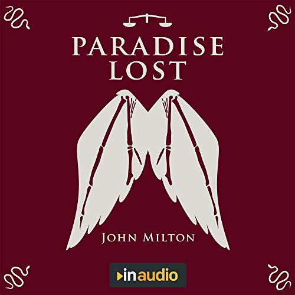

my favorite book
Paradise Lost - John Milton
Paradise Lost follows the events that happen in the Garden of Eden with the lead up of Satan's exile into Hell, and follows his point of view on the events of the easly Bible.
my favorite song
My favorite song is currently Kate McCannon - Colter Wall, I enjoy these ballad kind of songs from playing the steel guitar.